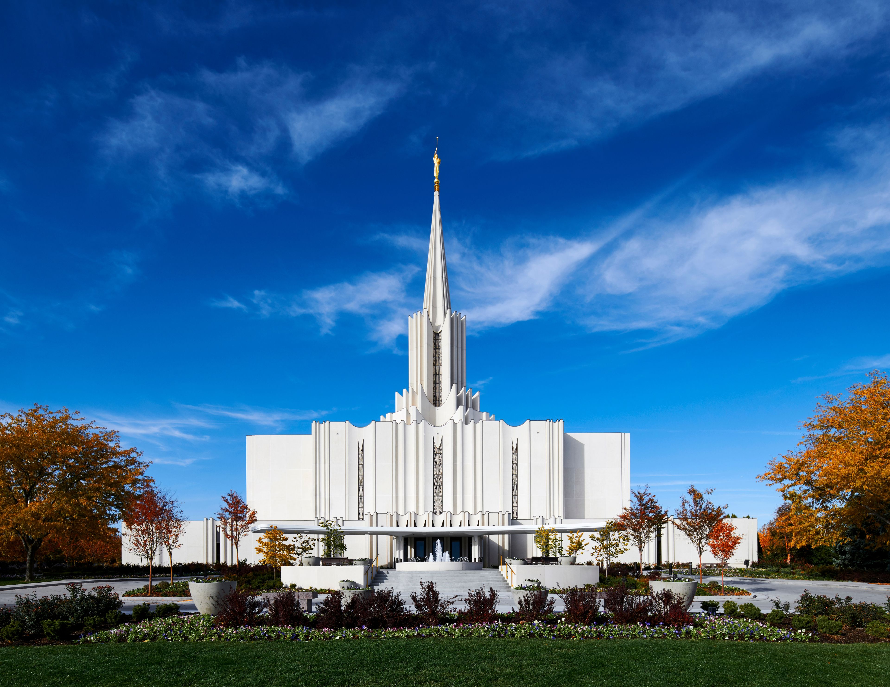
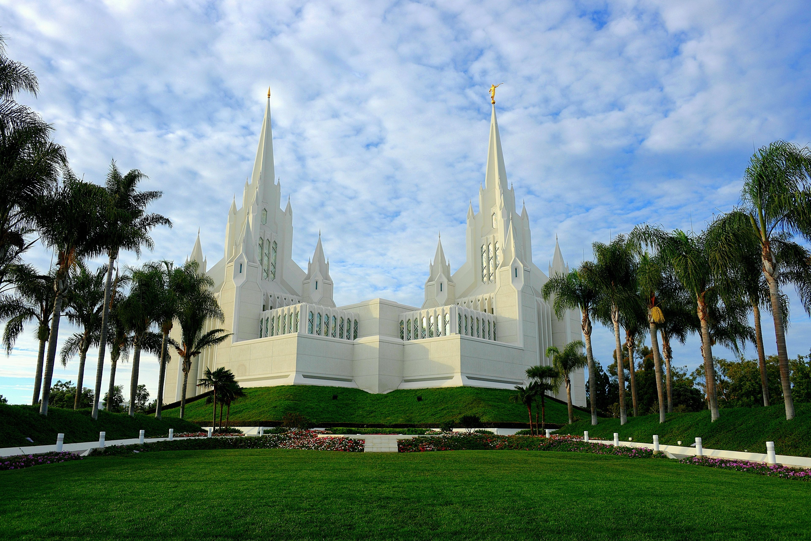

BOOK AT THE WORLDS BEST INNS & SUITES FOR REGULAR TEMPLE GOERS!
Set up your reservation now and experience more this temple trip.
Reserve Now
Temple Highlights

Jordan River Utah Temple
Description:
The beautifully white Jordan River Utah Temple stands in the southern Salt Lake Valley,
2 miles west of I-15. It is the namesake of the Jordan River, which flows about a mile east of the temple on
its course through the valley. At the entrance to the temple, visitors are greeted by a striking water fountain,
which spouts among vividly colored flowers and shrubs. The grounds are open to all who wish to the feel the peace
that surrounds this holy building.

Mesa Arizona Temple
Description:
Located just east of the original Mesa Townsite—settled by pioneers of The Church of Jesus Christ
of Latter-day Saints—the Mesa Arizona Temple anchors a historic district, which has predominantly retained its residential
character. A public visitors' center shares the meticulously manicured grounds of the temple, which feature a cactus garden
and large reflection pools. The Easter season brings thousands of guests to the temple grounds every year to watch Jesus the
Christ, the largest annual outdoor Easter pageant in the world. At Christmas time, the grounds are converted to an exquisite
Nativity display accented by hundreds of thousands of Christmas lights.

San Diego California Temple
Description:
Situated near the upscale community of La Jolla in San Diego, the striking double towers of the San Diego
California Temple soar above I-5 in heavily populated Southern California. Connecting the towers at the center is a star-shaped
atrium filled with a colorful garden. The atrium is accessed from the two-story Celestial Room featuring towering art glass,
suspended light fixtures, and a grand staircase to an upper-level balcony. The public is invited to tour the manicured temple grounds
and a visitors' center honoring the San Diego Mormon Battalion, located 10 miles south of the temple in Old Town San Diego.
Anchorage Alaska Temple
Description:
The Anchorage Alaska Temple stands just east of highly traveled Seward Highway in southern Anchorage.
A beautiful grove of trees and the majestic Chugach Mountains create a stunning backdrop for this holy house. The temple
is part of a complex with the Anchorage Alaska Stake Center; the two buildings share a common parking lot.
--Bethesda, Washington--